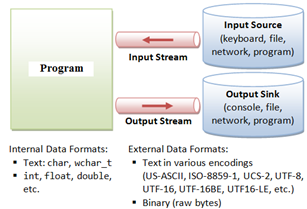

• All programming languages provide API’s to perform operations on a file on disk.
• These operations help n persisting the data and fetching of data whenever required.
Following are the operations that can be performed on a file a) Creating a new file b) Writing into a file c) Opening an existing file d) Reading a file e) Closing a file
